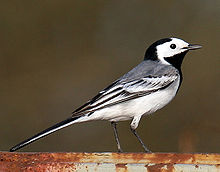
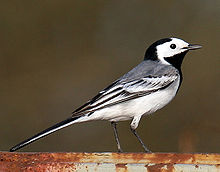

| White Wagtail | |
|---|---|
|  | |
| M. alba alba | |
| Conservation status | |
| Binomial name | |
| Motacilla alba Linnaeus, 1758 |
| White Wagtail | |
|---|---|
|  | |
| M. alba alba | |
| Conservation status | |
| Binomial name | |
| Motacilla alba Linnaeus, 1758 |
The White Wagtail (Motacilla alba) is a small passerine bird in the wagtail family Motacillidae, which also includes the pipits and longclaws. This species breeds in much of Europe and Asia and parts of north Africa. It is resident in the mildest parts of its range, but otherwise migrates to Africa. It has a toehold in Alaska as a scarce breeder. In some areas, notably Britain and Ireland, the sub-species Pied Wagtail (M. a. yarrellii) predominates.
This is an insectivorous bird of open country, often near habitation and water. It prefers bare areas for feeding, where it can see and pursue its prey. In urban areas it has adapted to foraging on paved areas such as car parks. It nests in crevices in stone walls and similar natural and man-made structures.
The White Wagtail is the national bird of Latvia.

{kind=link}